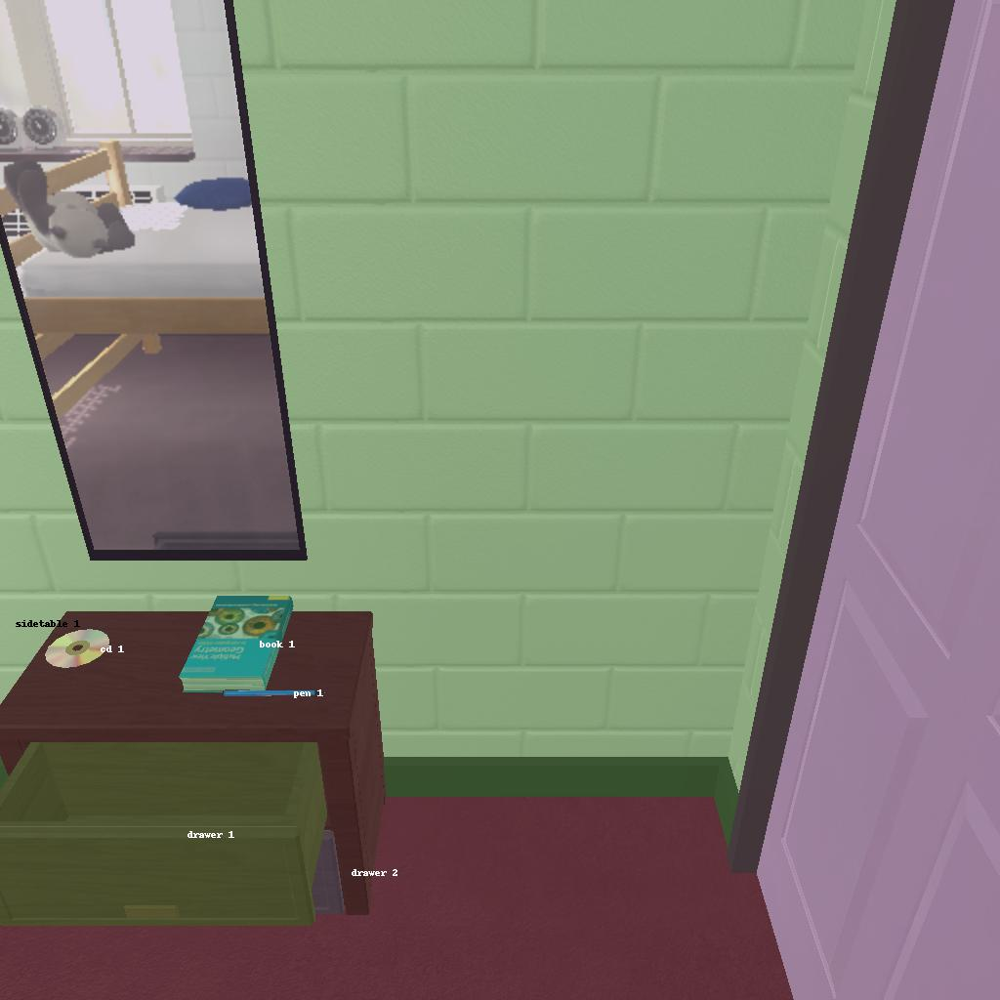

---------------------------------------------------------task: 8---------------------------------------------------------
--------------------------------------------------------------------------------------------------------------------------------------------------------------------
--------------------------------------------------------------------------------------------------------------------------------------------------------------------
Step:--------------------------------------------------------------------------15-------------------------------------------------------------------------------
----------------------------------------
VLM Prompt:
Image1:
Image2:
Image3:
**Instruction**
1. Analyze the provided image to identify all visible household objects, focusing on those relevant to the task description "put some laptop on desk."
2. Use the analysis of the image and the task hint "The agent must find an object of the desired type, pick it up, find the correct location to place it, and put it down there." to answer the question: what is the most reasonable action in the choices for the task description "put some laptop on desk"?
4. Decide and write the answer using the template: The answer is: (i): , where i is the real number. If there is no desired object in the image, search every place based on **Initial Observation** to find the object. And if no one is exactly correct, choose a similar answer.
**Initial Observation**
You are in the middle of a room. Looking quickly around you, you can see bed (1), garbagecan (1), desk (1), sidetable (1), drawer (1-5), laundryhamper (1)
**Answer Choices**
(1): go to bed 1
(2): go to garbagecan 1
(3): go to sidetable 1
(4): go to drawer 2
(5): go to laundryhamper 1
(6): go to drawer 3
(7): go to drawer 4
(8): go to drawer 5
(9): take alarmclock 1 from desk 1
(10): take pencil 1 from desk 1
(11): take pen 2 from desk 1
(12): examine desk 1
**Answer**
Let's think step by step by following the instructions.
----------------------------------------
----------------------------------------
Original Response:
The task description is "put some laptop on desk." From the initial observation, we can see that there is a desk (1) in the room. However, the images provided do not show a laptop. Therefore, we need to search every place based on the initial observation to find the object, which in this case is a laptop.
Looking at the answer choices, none of them directly mention finding or picking up a laptop. Since we need to put a laptop on the desk, the most reasonable first action would be to examine the desk to see if the laptop is already there or if there's space to put the laptop.
The answer is: (12): examine desk 1.
----------------------------------------
----------------------------------------
>>> Refine Original VLM Response and Get Pure Action: examine desk 1
----------------------------------------
-----------------------------------------------------------------
Running time: 14.3791024684906 seconds
Total Money: 4.81757
-----------------------------------------------------------------
-----------------------------------------------------------------
Text Observation:On the desk 1, you see a alarmclock 1, a pencil 1, and a pen 2.
-----------------------------------------------------------------
UNSUCCEED